The dataset used in this project comes from a bank marketing campaign, where a Portuguese bank contacted potential customers to promote term deposit subscriptions. The data provides insights into customer demographics, past interactions, and economic factors influencing financial decisions. The objective is to analyze this data, prepare it for machine learning models, and optimize marketing strategies by predicting customer responses.
🔗 Link to the Dataset: UC Irvine ML Repository – Bank Marketing
To streamline data access and retrieval, an API was utilized for programmatic access instead of downloading the dataset manually. The Bank Data API was hosted on Render, allowing dynamic data retrieval and integration into the analysis workflow. The API response was converted into a Pandas DataFrame for further analysis.
This dataset was selected because it contains detailed customer insights, including age, job, marital status, financial background, and response to previous campaigns. This helps us ensure authenticity and real-world applicability. By analyzing this data, we can identify patterns in customer behavior, optimize marketing strategies, and improve customer outreach efficiency.
import requests
import pandas as pd
# Define API URL
url = "https://bankdata-gvl5.onrender.com/data"
# Define headers with API key
headers = {
"API_KEY": "your_api_key_here"
}
# Make the GET request
response = requests.get(url, headers=headers)
# Check for successful response
if response.status_code == 200:
data = response.json()
# Convert JSON data to a Pandas DataFrame
df = pd.DataFrame(data)
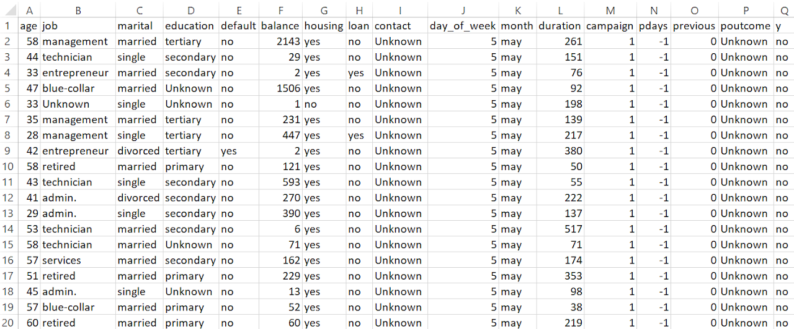
The dataset consists of 45,211 records with 17 features, including demographic details, financial attributes, and marketing interactions.
The target variable, y, indicates whether a client subscribed to a term deposit.
Initially, some categorical features (such as job, education, contact, and poutcome) had missing values, which were handled during data cleaning. The dataset includes both numerical and categorical variables, with key features such as age, balance, and duration playing a critical role in influencing customer decisions.
The dataset consists of more categorical features (58.8%) than numerical ones (41.2%), indicating that much of the analysis will involve handling non-numeric data, such as job type, education, and contact methods.
| Feature | Type | Description |
|---|---|---|
| Client Information | ||
| age | Integer | Age of the client |
| job | Categorical | Client’s occupation (e.g., admin., technician) |
| marital | Categorical | Marital status (married, single, divorced) |
| education | Categorical | Level of education (e.g., high.school, university.degree) |
| Financial & Loan Status | ||
| default | Binary | Has credit in default (yes or no) |
| balance | Integer | Average yearly balance in euros |
| housing | Binary | Has a housing loan |
| loan | Binary | Has a personal loan |
| Marketing Contact Info | ||
| contact | Categorical | Contact communication type (cellular, telephone) |
| day_of_week | Integer | Last contact day (1 = Mon, 5 = Fri) |
| month | Categorical | Last contact month (e.g., may, nov) |
| duration | Integer | Duration of last contact in seconds |
| Previous Campaign Performance | ||
| campaign | Integer | Number of contacts in current campaign |
| pdays | Integer | Days since last contact (-1 = never) |
| previous | Integer | Times contacted before this campaign |
| poutcome | Categorical | Previous campaign outcome (success, failure, nonexistent) |
| Target Variable | ||
| y | Binary | Subscribed to term deposit (yes or no) |
| Category | Feature | Details |
|---|---|---|
| Missing | job | 288 unknown values |
| Missing | education | 1857 unknown values |
| Missing | contact | 13020 unknown values |
| Missing | poutcome | 36959 unknown values |
| Incorrect | job, education | "Unknown" values in categorical fields |
| Negative | balance | Valid overdrafts (retained) |
| Duplicates | All | No duplicate rows found |
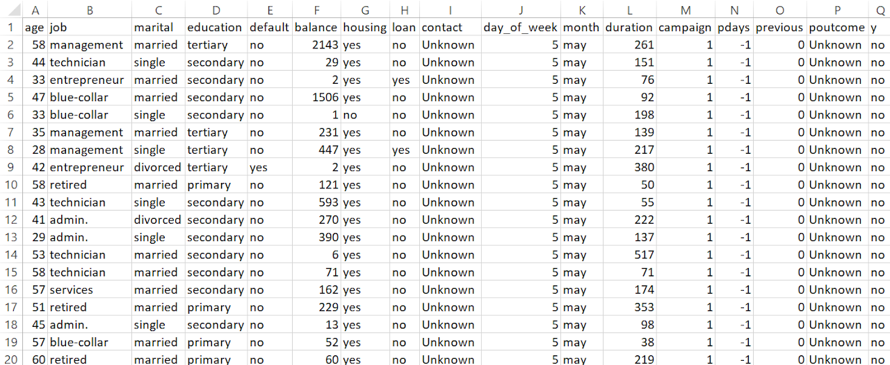
Job and education are important personal attributes, so removing missing values would reduce data size. Using the mode ensures useful information is retained without making random assumptions.
The contact method is campaign-specific, not a customer trait. Keeping "Unknown" as a category allows to see if it affects subscription rates without incorrectly assuming a common contact type.
Poutcome shows if a previous campaign was successful, failed, or nonexistent. Converting it to binary would remove this key distinction, so keeping it categorical helps in better prediction.
| Statistic | Age | Balance | Day of Week | Duration | Campaign | Pdays | Previous |
|---|---|---|---|---|---|---|---|
| Count | 45211.0 | 45211.0 | 45211.0 | 45211.0 | 45211.0 | 45211.0 | 45211.0 |
| Mean | 40.94 | 1362.27 | 15.81 | 258.16 | 2.76 | 40.2 | 0.58 |
| Std Dev | 10.62 | 3044.77 | 8.32 | 257.53 | 3.1 | 100.13 | 2.3 |
| Min | 18.0 | -8019.0 | 1.0 | 0.0 | 1.0 | -1.0 | 0.0 |
| 25% | 33.0 | 72.0 | 8.0 | 103.0 | 1.0 | -1.0 | 0.0 |
| 50% | 39.0 | 448.0 | 16.0 | 180.0 | 2.0 | -1.0 | 0.0 |
| 75% | 48.0 | 1428.0 | 21.0 | 319.0 | 3.0 | -1.0 | 0.0 |
| Max | 95.0 | 102127.0 | 31.0 | 4918.0 | 63.0 | 871.0 | 275.0 |
The average age of clients is 40.9 years, with most falling between 33 and 48 years. The youngest client is 18, and the oldest is 95, indicating a broad customer base.
The average balance is €1362, but the standard deviation (€3044) suggests high variation. The minimum balance is -€8019, indicating overdrafts, while the maximum is €102,127. 75% of clients have a balance below €1428, meaning a small group holds very high balances.
The range is from 1 (Monday) to 31, possibly indicating errors or a non-standard encoding.
The average call lasts 258 seconds (~4.3 minutes), with a wide variation. Some calls were as long as 4918 seconds (~82 minutes), likely indicating customer interest.
Clients were contacted an average of 2.76 times, but some were contacted up to 63 times, which might indicate aggressive marketing.
-1 is the most frequent value, meaning many clients had no previous contact. Among those previously contacted, the range is from 1 to 871 days, showing that some clients were re-engaged after long periods.
Most clients had zero previous contacts, but a few had been contacted as many as 275 times, indicating repeat interactions.
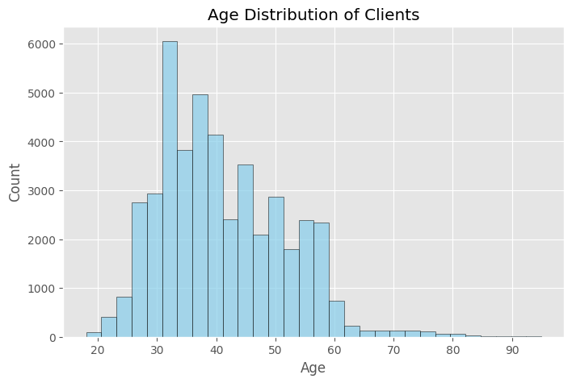
This histogram represents the age distribution of clients in the dataset. Most clients fall within the 30 to 50-year-old range, with the highest concentration around 30 to 40 years old. There are fewer younger and older individuals in the dataset, suggesting that the bank’s primary customer base consists of middle-aged clients. Understanding this distribution is crucial, as different age groups may have varying financial needs, investment habits, and responsiveness to marketing campaigns.
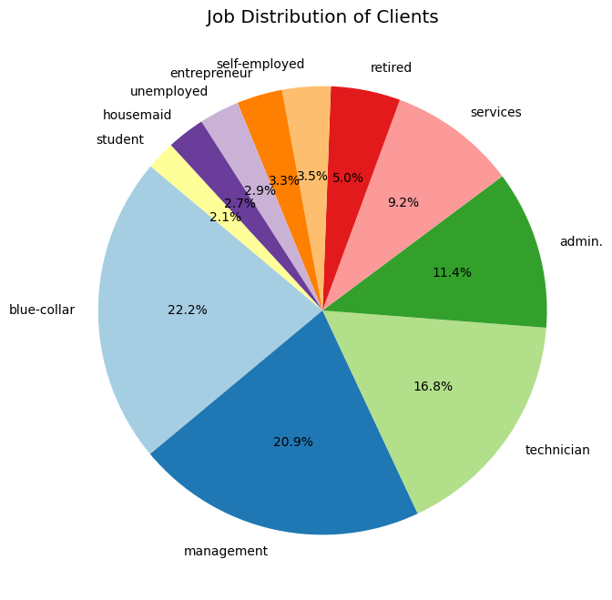
This pie chart illustrates the breakdown of clients by occupation. The most common job categories include blue-collar workers (22.2%), management (20.9%), and technicians (16.8%). Other notable categories include administrative roles, services, and self-employed individuals. This insight helps in tailoring financial products, as different professions may have varying income levels, financial priorities, and likelihood to invest in term deposits. The relatively small proportion of students and retired individuals indicates that the bank’s marketing strategy primarily targets working professionals.
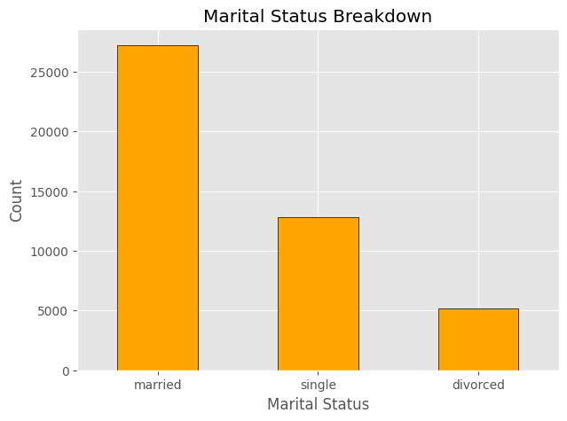
This bar chart displays the distribution of clients based on their marital status. A significant portion of the clients are married, followed by single and divorced individuals. This suggests that a large part of the bank’s customer base may be financially stable individuals managing household finances. Understanding marital status can help in designing targeted financial products such as joint savings accounts, home loans, or investment plans catered to families.
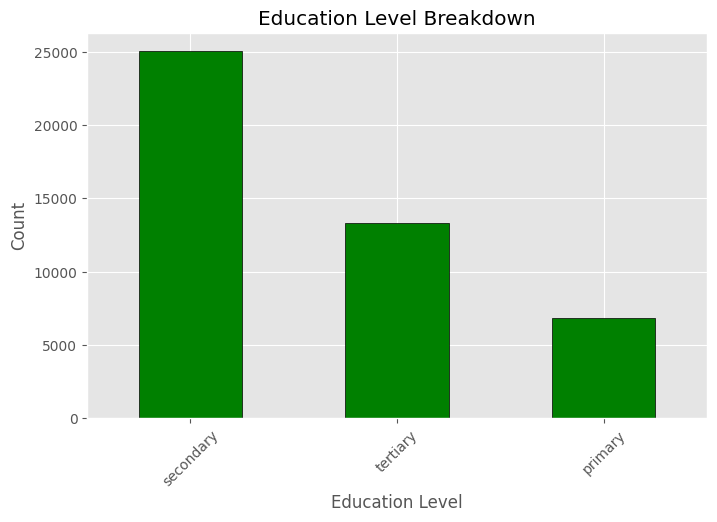
This graph highlights the educational background of clients. Secondary education is the most common level, followed by tertiary (university-level) and primary education. Clients with higher education levels may have better financial literacy and may be more likely to invest in banking products. Those with lower education levels may require simplified financial products or additional guidance in decision-making. This insight helps in designing marketing campaigns that cater to different customer segments based on their financial knowledge.
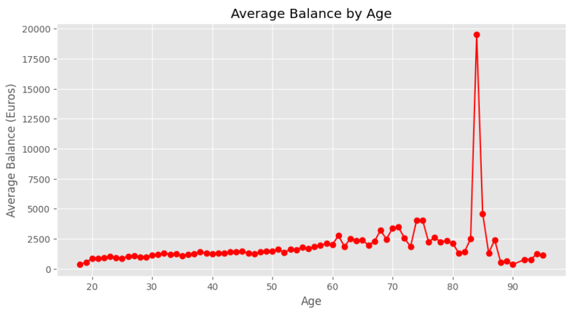
This line graph shows the average yearly bank balance for different age groups. Generally, older clients tend to have higher balances, likely due to accumulated savings over time. The data also reveals a few extreme outliers with significantly high balances, possibly representing wealthy individuals or business owners. Understanding this trend can help the bank offer age-specific financial products, such as retirement savings plans for older clients and investment options for younger ones.
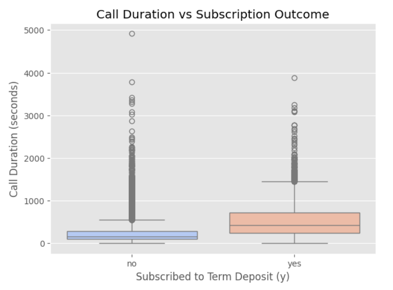
This box plot explores the relationship between call duration and client subscription status. It shows that clients who engaged in longer calls were more likely to subscribe to a term deposit. This suggests that effective communication and detailed discussions with potential customers play a key role in persuading them to invest. The presence of outliers with extremely long calls may indicate follow-up calls or negotiations. Banks can use this insight to train sales representatives on effective conversation strategies to increase conversion rates.
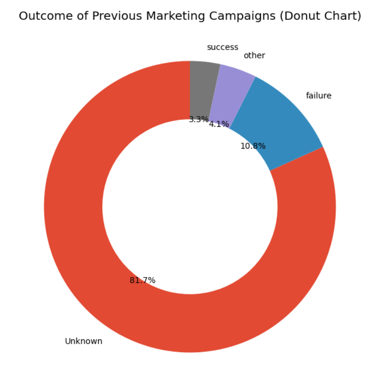
This donut chart visualizes the outcomes of previous marketing campaigns. A large proportion of clients were not previously contacted, while those who were contacted in past campaigns showed mixed results. Only a small percentage of clients successfully subscribed due to previous interactions, indicating that past marketing efforts may not have been highly effective. This suggests that improving follow-up strategies or refining customer targeting could enhance future campaign success.
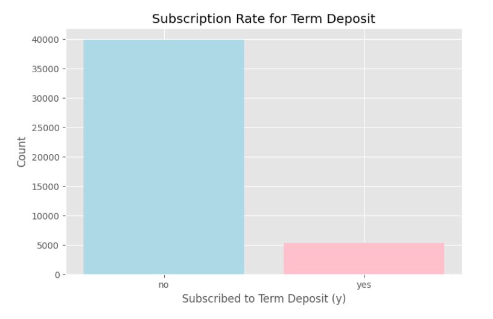
This chart presents the overall subscription rate among clients. The vast majority of individuals did not subscribe, indicating that converting customers remains a challenge. A relatively small proportion of clients agreed to invest in a term deposit, which may suggest a need for better marketing tactics, more personalized offers, or improved customer trust. The bank may also explore whether specific groups (e.g., by age, job, or education) have a higher likelihood of subscribing.
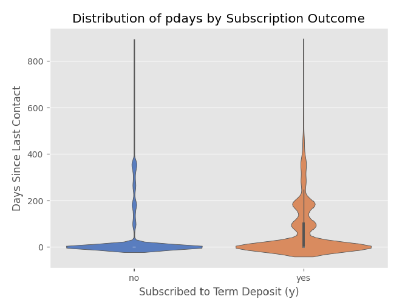
This violin plot illustrates the distribution of pdays, which represents the number of days since a client was last contacted in a previous campaign. The plot shows that clients who were contacted more recently (lower pdays values) were more likely to subscribe, reinforcing the importance of timely follow-ups. Those who were contacted a long time ago or never before (pdays = -1) had a lower probability of subscribing. This highlights the significance of maintaining customer engagement and improving follow-up efficiency.
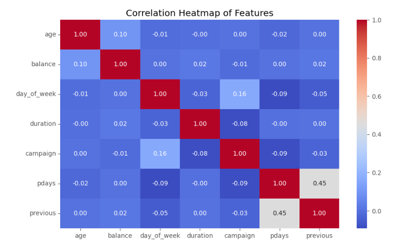
This heatmap visualizes the correlations between different numerical features in the dataset. A strong positive correlation is observed between call duration and subscription success, meaning that longer call durations tend to result in more successful term deposit subscriptions. Other variables, such as age and balance, show relatively weak correlations, suggesting that demographic factors alone may not be strong predictors. Understanding these relationships can guide feature selection when building a predictive model.
The dataset primarily consists of bank marketing campaign data, focusing on client demographics, financial status, and previous interactions. The age distribution reveals that most clients fall between 30–50 years old. When examining job roles, blue-collar workers, management, and technicians make up the majority. Most clients are married, which could impact their financial decision-making. Secondary education is the most common, followed by university degrees, suggesting a reasonable level of financial literacy.
Average bank balance by age indicates that older individuals tend to have higher balances, likely due to accumulated savings. The call duration vs. subscription outcome analysis shows that longer conversations generally lead to higher subscription rates, emphasizing the importance of well-structured customer interactions. Insights from previous marketing campaigns show that most clients had no prior contact, and among those contacted, only a small percentage subscribed, highlighting the need for improved engagement strategies.
The subscription rate analysis confirms that most clients did not subscribe to a term deposit, making it essential to identify factors that could improve conversion rates. The pdays analysis (time since last contact) shows that more recent interactions increase the likelihood of success, stressing the role of follow-ups. Finally, the correlation heatmap confirms that call duration has the strongest impact on subscription success, while factors like age and balance have weaker influence.